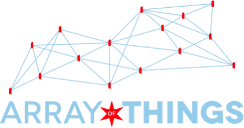

<!-- Content
    ================================================== -->
<div class="content">
	<main class="container">

<ul>
<li>
Seattle will be one of nine (9) North American and global cities to participate in the Array of Things (AoT) project by locating 10 AoT sensors around the City to provide real-time, location-based data about the city’s environment, infrastructure and activity to researchers and the public. Seattle’s local AoT project is a partnership between the City (including Dept of Information Technology, Seattle Public Utilities, Seattle City Light and Department of Neighborhoods) that will own, locate and maintain the sensors, and the University of Washington that will collect and maintain the data. This initiative has the potential to provide a wide array of data that allows researchers, policymakers, developers and residents to work together and take specific actions, to help the City to operate more efficiently and realize cost savings by anticipating and proactively addressing potential problems like urban flooding. 
 

</li>

<li>
The Seattle region has experienced unusual climate in the past few years. Power system planning criteria are directly based on expected maximum/minimum temperatures, and a shift in temperature patterns could significantly affect how the system should be designed. In this project, we’ll correlate the change in temperature with power system load data to detect relationships between temperature and electricity demand. In contrast to previous planning methods, where only total system load is considered and temperature from one location, we’ll use data from over 100 temperature sensors within Seattle to create a spatiotemporal map of how load is changing with respect to temperature. This picture will aid in developing new planning criteria by providing engineers with a clear idea of where resources should be allocated to adapt to the changing environment. Performing data analytics will also help engineers better understand factors contributing to load growth and whether recent observations reflect a temporary slowdown or a permanent trend. 


</li>

<li>

Governments like the City of Seattle generate vast amounts of data in the course of conducting business. This data can be used to assess performance, identify insights that can lead to improved service delivery, and enable our more than 1,500 member strong civic technology community to develop innovative solutions. At the same time, this data potential contains personal information that could cause privacy harm if shared publicly. The City and University of Washington have partnered to develop policies and procedures to make more data available through our open data platform while protecting the public’s privacy. Through our partnership, we will increase the amount of data publicly available, enabling additional partnerships. 


</li>

	</main>
</div>

